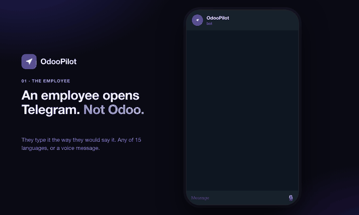
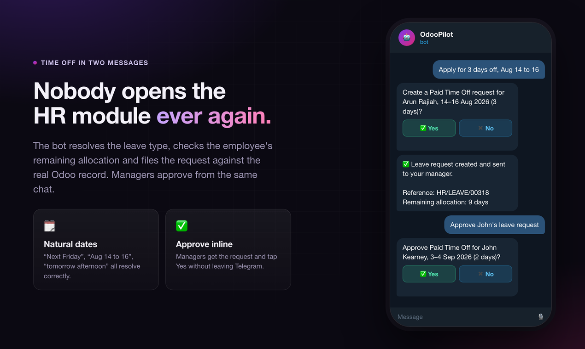

Every employee gets an AI assistant on Telegram or WhatsApp. They apply for leave, approve requests, log timesheets and update the CRM by typing or speaking, in 15 languages. No Odoo login, no app to install, no training.

One message, one tap. The leave request exists in Odoo.
|
Yes, if
✓ Half your team avoids the Odoo UI
✓ Approvals and CRM updates sit for days ✓ Field or warehouse staff need Odoo on a phone ✓ You self-host and want your data to stay put ✓ You already have an LLM key, or want a free tier |
No, if
✗ You want a bot for customers, not staff
✗ You are on Odoo Online, which cannot install custom modules ✗ You cannot expose an HTTPS webhook endpoint ✗ You want zero AI in your ERP under any circumstances |
Real ORM reads and writes against real records. Not a search box with a chat skin.
Project My tasks, task detail, log timesheet hours |
Sales Quotations, order status, confirm orders |
CRM Pipeline, move stages, expected revenue |
Invoicing Overdue invoices, balances, payment status (read-only) |
Inventory Stock on hand and product availability (read-only) |
Purchase Purchase orders and supplier quotes (read-only) |
HR & Expenses Employee lookup, submit expenses with a photo |
Leaves Apply, check balance, approve as a manager |
This is the part most AI addons skip.
🔒 Their own permissions Each chat user is an Odoo user. Record rules and access rights apply unchanged. The bot cannot surface anything they could not already open. |
✅ Every write asks first Reads run immediately. Writes stage the change, name the resolved record and wait for a Yes. The button carries a per-write nonce, so an injected instruction cannot swap the record between question and tap. |
📜 Immutable audit log One row per tool call, read or write, filterable by user, tool, channel and outcome. Nothing the assistant does is invisible. |

A plain Odoo addon. No sidecar service, no Docker container, no vendor account in the middle.
Anthropic Claude Best on multi-step actions |
OpenAI GPT-4o Fast, widely available |
Groq Free tier, very low latency |
Ollama 100% local, no third-party calls |
1. Install Drop the module in your addons path and install it from Apps. |
2. Configure Settings → OdooPilot. Paste a bot token and an LLM key, click Register webhook. |
3. Link users Each employee sends /link once and confirms in Odoo. Done. |
The App Store strips links from this description, so these are written out to copy. The clickable repository link is in the sidebar of this page.
|
Documentation
Setup guide, configuration and all 19 tools
github.com/arunrajiah/odoopilot#readme Release notes and upgrade steps
github.com/arunrajiah/odoopilot/blob/main/CHANGELOG.md Security policy and disclosure
github.com/arunrajiah/odoopilot/blob/main/SECURITY.md |
Source and support
Source code
github.com/arunrajiah/odoopilot Questions, bugs and ideas
github.com/arunrajiah/odoopilot/issues Email the maintainer
arunrajiah@gmail.com ♥ Sponsor the project
github.com/sponsors/arunrajiah |
Free and open source under LGPL-3. Built and maintained by Arun Rajiah.